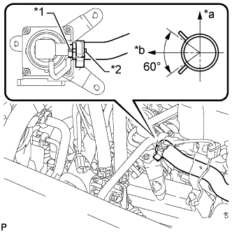
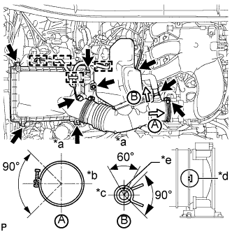

КЛАПАН ПЕРЕКЛЮЧЕНИЯ ПОДАЧИ ВОЗДУХА (для ряда 1) > УСТАНОВКА |
| 1. УСТАНОВИТЕ КОМПЛЕКТ КЛАПАНА СИСТЕМЫ СНИЖЕНИЯ ТОКСИЧНОСТИ ОТРАБОТАВШИХ ГАЗОВ |
Установите комплект клапана системы снижения токсичности отработанных газов и закрепите его 3 гайками.
|  |
Совместите нанесенную краской метку с выступом и подсоедините воздушный шланг № 1.
| *1 | Ребро |
| *2 | Метка, нанесенная краской |
| *a | Правая сторона |
| *b | Верх |
Подсоедините разъем комплекта клапана системы снижения токсичности отработавших газов.
| 2. УСТАНОВИТЕ ВОЗДУШНЫЙ ПАТРУБОК |
 |
Установите 2 новых прокладки на воздушный патрубок.
| *1 | Новая прокладка |
| *2 | Воздушная трубка |
Установите воздушный патрубок и закрепите его 2 болтами и 2 гайками.
| 3. ПОДСОЕДИНИТЕ СОЕДИНИТЕЛЬ ШЛАНГА ОХЛАЖДАЮЩЕЙ ЖИДКОСТИ |
Подсоедините соединитель шланга охлаждающей жидкости и закрепите его болтом.
| 4. УСТАНОВИТЕ КОРПУС ВОЗДУШНОГО ФИЛЬТРА В СБОРЕ |
Установите корпус воздушного фильтра и закрепите его 3 болтами.
Закрепите зажим жгута проводов.
Установите фильтрующий элемент воздушного фильтра.
| 5. УСТАНОВИТЕ ШЛАНГ И КРЫШКУ ВОЗДУШНОГО ФИЛЬТРА |
|  |
Установите крышку и шланг воздушного фильтра.
| *a | Верх |
| *b | Передняя сторона |
| *c | Справа |
| *d | Совместите вырез шланга с выступом на дроссельной заслонке |
| *e | Метка, нанесенная краской |
Установите крышку воздушного фильтра со шлангом и закрепите ее болтом и 4 откидными защелками.
Затяните хомут.
Введите в зацепление 4 зажима и подсоедините вентиляционный шланг, вакуумный шланг и разъем датчика массового расхода воздуха.
| 6. УСТАНОВИТЕ ДЕКОРАТИВНУЮ КРЫШКУ V-ОБРАЗНОГО ДВИГАТЕЛЯ |
 |
Совместите 2 крюка крышки V-образного двигателя с кронштейном. Затем совместите 2 уплотнительных шайбы декоративной крышки V-образного двигателя с 2 штифтами и нажмите на декоративную крышку V-образного двигателя, чтобы закрепить штифты.
| *1 | Штифт |
| *2 | Крюк |
| 7. УСТАНОВИТЕ ВЕРХНЕЕ УПЛОТНЕНИЕ КРОНШТЕЙНА РАДИАТОРА |
Установите верхнее уплотнение кронштейна радиатора и закрепите его 13 фиксаторами.